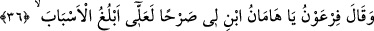

Bu hadisin te’vili sadedinde çok açıklamalar yapılmıştır. Cüneyd Bağdâdî (k.s.)’un
şu açıklamayı yaptığı nakledilir: Kul bazen bir halden daha yükseğine geçer. Ancak
üzerinde, birinci halden bir tortu kalır ve ikinci halde iken o tortuya yönelerek onu
tashih etmeye çalışır.
Denilmiştir ki: Kul ile Cenab-ı Hak arasında nur ve karanlıktan bin ya da yüz makam
vardır. Buna göre Hz. Peygamber (s.a.) de her bir makamdan geçişinde her gün bütün
perdeleri koparıp atmakta, bu da onun kemâl sınırlarının zirvesine ulaşmış bir zât
olduğunu ve o Yüce Padişah nezdinde ne kadar yüce bir makamı bulunduğunu
göstermektedir.
Fakir der ki: Hadisteki “gayn/kaplanma,” beşeriyet giysisine ve kalbin Cenab-ı
Hakk’ın Ahadlik/teklik durumunu müşâhede etmesini engelleyen mümkünlük özelliğine
işâret etmektedir. Hz. Peygamber (s.a.) için, her gün, yüz mertebenin -ki Ahadiyetle
birlikte (1+99=100) esmâ-i hüsnâ mertebeleridir- muazzam bir şekilde inkişaf etmesi
söz konusu olunca o latif kalbinde hiçbir buğulanma (ğayn) kalmamıştır. Hadis-i şerif,
“istiğfâr” lafzını zikrederek tebdil mertebesine işâret etmektedir. Yâni “buğulanma/
ğayn”ın “ayn”a; bilginin de bizzat müşahedeye dönüştüğüne işaret etmektedir. Böylece
makamın kendisinde bir buğulanma varken, ümmeti irşad maksadıyla istiğfâr sâyesinde
bu giderilmiş olmaktadır. Her ne kadar basireti kıt avam mensupları aksini vehmetse de
aslında bu makamda da ne bir buğulanma ne de istiğfâr söz konusudur.
Âyette kibirli ve zorbalar kötülenmektedir. Hz. Peygamber (s.a.) de şöyle buyurur:
“Kıyâmet günü kibirli ve zorbalar Allah Teâlâ için basit ve âdi varlıklar olduğu için,
toz-toprak suretinde haşredileceklerdir. Ki böylece insanlar, onların üzerine basıp
gitsinler.”[182] Bunun sebebi, gönül ehline gizli kalmadığı üzere, kibirli ve zorbaların
haline en uygun görüntünün toz görüntüsü olmasıdır.
36. Firavun: Ey Hâmân, bana yüksek bir kule yap; belki yollara erişirim,
Firavun kibir ve zorbalığından dolayı göklere yükselmek arzusuyla vezirine dedi ki:
“Ey Hâmân!”
Kâşifî şöyle der: Harbil nasihat ederken Firavun sözün dinleyenler üzerinde tesir
edebileceğini düşündü. Vezirini çağırdı; kendisini ve kavmini bir başka şeyle meşgul
etti.
Keşfü’l-esrâr’da der ki: Hâmân, Firavun’un veziriydi. Ama ne Kıpti idi ne de İsrâilî
idi. Anlatıldığına göre, Firavun’la beraber boğulmamış ve onun vefatından sonra da
uzunca bir süre insanlardan uzak duran mahzun bir şakî olarak yaşamıştı.
“Bana” açık, bakanların görebileceği aşikâr, “yüksek” ve pişmiş çamurla (tuğlayla)
sağlamlaştırılmış “bir kule yap.”